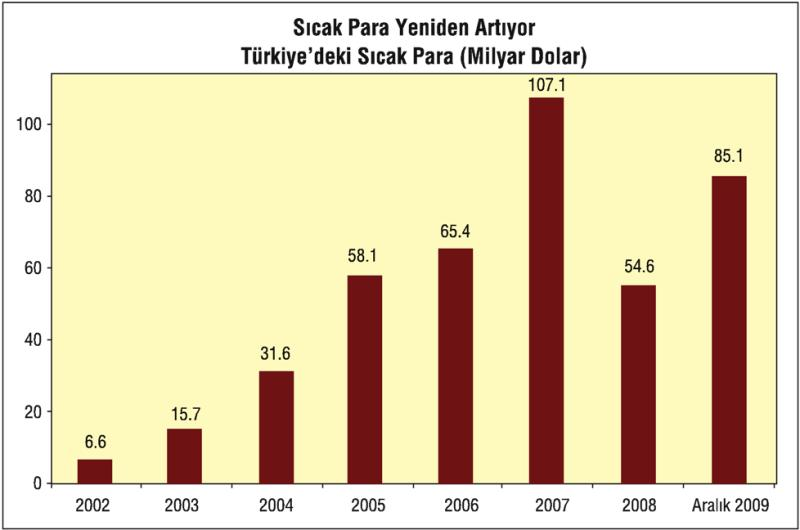
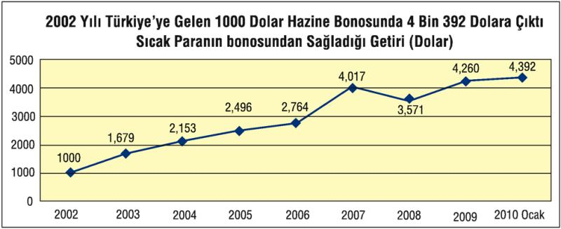
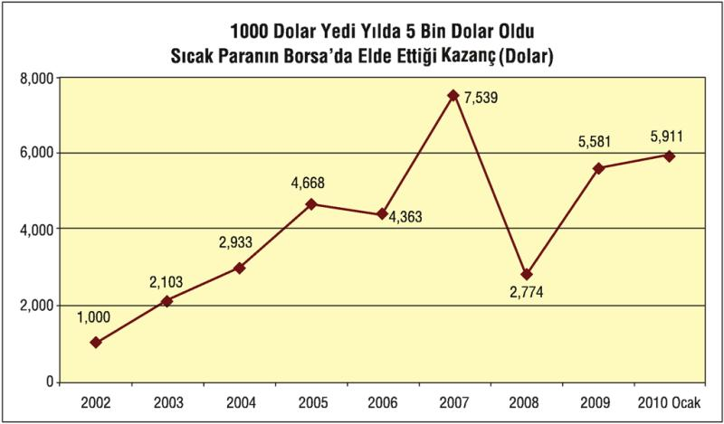
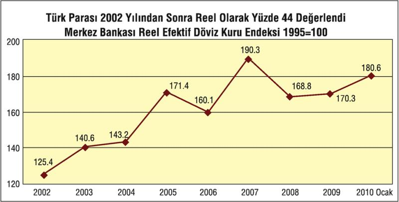
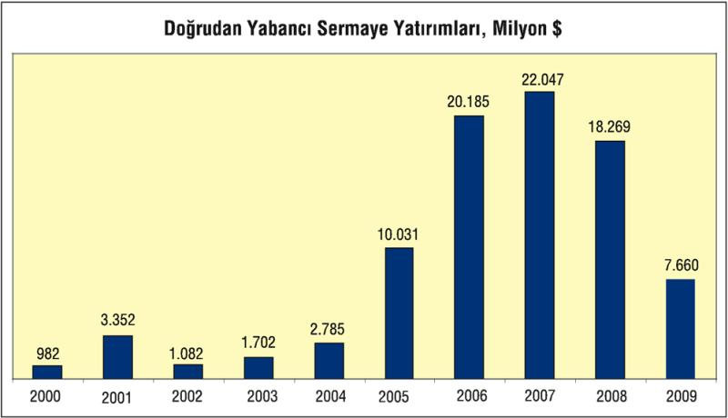
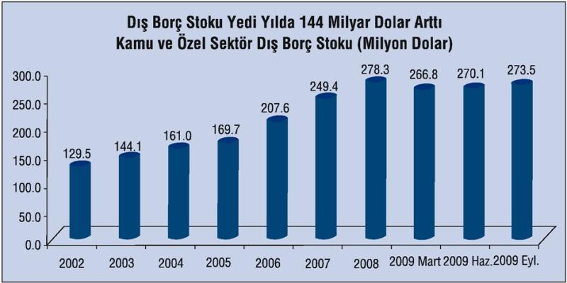
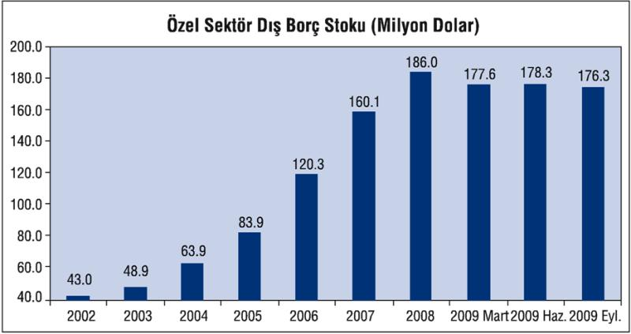

Türkiye'nin döviz açığını finanse etmek için kullandığı sıcak para, doğrudan yabancı sermaye ve dış kredi kanallarında belli daralmalar yaşanmakla birlikte, özellikle sıcak parada bir kısmı şaibeli yeni girişler 2009'un ikinci yarısında arttı.
Yabancıların Türkiye'deki sıcak para stoku Türk parasının değerlenmesi ve yüksek faiz oranlarının etkisiyle 2002 yılından sonra hızla artarak 2007 yılı sonunda 107 milyar dolara kadar yükselmişti. 2008'de yüzde 1'in altına düşen büyüme, sıcak para girişini de geriletti. Özellikle küresel krizin etkisi altına girilen son çeyrekte, giriş, yerini çıkışa bıraktı ve yıl toplamında sıcak para stoku 55 milyar doların altına indi. 2009'da ise yılın ilk yarısı ile ikinci yarısı farklı seyretti ve yıl toplamında 85 mlyar doları aşan sıcak para stoku oluştu.

Yabancıların "sıcak para" olarak da isimlendirilen Türkiye'deki portföylerinin büyük bölümünü yüzde 65 ile hisse senetleri oluşturuyor.
Yabancıların portföyünün yüzde 24'ü Devlet İç Borçlanma Senetleri (DİBS) yüzde 11'i ise banka mevduatından oluşuyor.
2001 krizinden sonra uygulanan "yüksek faiz-düşük kur" politikası Türkiye'yi sıcak para açısından büyük bir kazanç kapısı haline getirdi.
2002 yılı sonunda Türkiye'ye gelen 1000 dolar Hazine bonosunda 2007 yılı sonunda 4 bin 17 dolara kadar yükseldi. Küresel krizin etkisiyle Türk parasının değer kaybettiği ve faiz oranlarının gerilediği 2008 yılında ise sıcak para kayıpla karşılaştı. 2008 yılı sonunda 3 bin 571 dolar olan söz konusu tutar, 2009 yılı sonunda ise 4 bin 260 dolara yükseldi.

Bu yılın ilk bir aylık döneminde ise sıcak para Hazine bonosunda dolar bazında yüzde 3,1 oranında kazanç sağladı. 2002 yılı sonunda Türkiye'ye gelen 1000 dolar Hazine bonosunda 4 bin 392 dolara çıktı.
2001 krizi sırasında fiyatları dibe vuran İMKB'deki hisse senetleri 2002 yılından sonra Türkiye'ye gelen sıcak para için süper bir kazanç kapısı oldu. 2002 yılı sonunda İMKB'deki hisse senetlerine yatırılan 100 dolar 2007 yılı sonunda 7 bin 539 dolara kadar çıktı.

Ancak küresel krizin diğer hisse senedi fiyatlarında yol açtığı düşüş ve Türk parasının değer kaybetmesi nedeniyle 2008 yılında yüzde 63,2 gibi oldukça yüksek bir zararla karşılaşan sıcak para, 2009 yılında ise dolar bazında yüzde 101,2 oranında kazanç sağladı.
Bu yılın ilk ayında ise sıcak para borsada yüzde 8,2 oranında kazandı. 2002 yılı sonunda Türkiye'ye gelen 1000 dolar, Borsa'da 5 bin 911 dolara çıktı.
Türk Lirasına uygulanan yüksek faiz, Türk parasının son yıllarda önemli ölçüde değerlenmesine neden oldu.
Merkez Bankası'nın Türk parasının 1995 yılındaki değerini 100 kabul ederek oluşturduğu TÜFE bazlı reel efektif döviz kuru endeksi 2008 sonunda 168,8 olarak gerçekleşti.

Türk parası 2008 yılında yüzde 12,4 oranında değer kaybetse de Ocak 2010 itibariyle 2002 yılı sonuna göre hala yüzde 44 oranında değerlendi. Türkiye'nin son bir yıllık dönemde ihracatında küresel krize bağlı olarak yaşanan üçte bir oranında azalmada Türk parasının bu ölçüde değerlenmiş olmasının payı da bulunuyor.
Küresel durgunluk nedeniyle tüm ülkelerin merkez bankaları 2008 yılında politika faizlerinde önemli indirimlere gittiler.
Ekonomide yaşanan durgunluk nedeniyle enflasyonun hızla aşağı doğru inmesiyle birlikte Merkez Bankası da hem geçen yılın son aylarında hem de bu yılın ilk aylarında gecelik faiz oranlarını indirdi. Para Politikası Kurulu en son gecelik borçlanma faizini Ekim ayında yüzde 6,75'e kadar indirdi.
Dış kaynak sağlamanın bir diğer kanalı doğrudan yabancı sermaye girişinde 2009, başarısız bir yıl oldu. Türkiye özellikle 2006, 2007 ve 2008 yıllarında yoğun bir doğrudan yabancı sermaye yatırımı aldı. Ancak söz konusu sermaye sektörel olarak daha çok bankacılık, haberleşme, ticaret ve diğer hizmet sektörleri ile gayrimenkul alımı için geldi. Üretime ve ihracata ek bir katkı sağlamayan bu sektörlerdeki yabancı sermayenin ek istihdam yaratma kapasitesi de düşük kaldı. 2009'da ise, girişler, 2008'e göre 11 milyar doların üzerinde azaldı ve 7,7 milyar doların altına düştü.

2003- 2009 döneminde doğrudan yabancı sermayenin yüzde 60, 8'i hizmetler sektörüne yönelik yatırımlardan oluştu. Bu kapsamdaki, bankacılık ve sigortacılık sektörüne gelen yabancı yatırım tutarı doğrudan yatırımların yüzde 35, 8'ini buldu. Haberleşme ve ulaştırma sektörüne gelen tutarın payı ise yüzde 15 oldu. İmalat sanayi sektörünün yabancı sermayeden aldığı pay ise yüzde 15, 8 düzeyinde gerçekleşti. Gayrimenkul için gelen sermayenin payı ise yüzde 18 oldu.
| 2003- 2009 Döneminde Gelen Yabancı Sermaye (milyon dolar) | ||
| Sermaye | Pay(%) | |
| TARIM | 106 | 0, 13 |
| SANAYİ | 17.269 | 21, 18 |
| - Madencilik | 913 | 1, 12 |
| -İmalat Sanayi | 12.846 | 15, 75 |
| -Enerji | 3.510 | 4, 30 |
| HİZMETLER | 49.611 | 60, 83 |
| -Toptan ve Per. Tic | 3.885 | 4, 76 |
| -Haberleşme | 12.179 | 14, 93 |
| -Finansal Aracılık | 29.161 | 35, 76 |
| -Diğer | 4.386 | 5, 38 |
| GAYRİMENKUL | 14.566 | 17, 86 |
| TOPLAM | 81.552 | 100, 00 |
Dış kaynak sağlamanın bir diğer kanalı olan dış kredilerde ise 2009'da tempo düştü. Dış borç stoku Eylül 2009 itibariyle ise 273,5 milyar dolar olarak gerçekleşti.
Türkiye'nin dış borç stoku (Kamu+özel sektör) son 7 yıllık dönemde toplam 144 milyar dolar büyüdü. 2002 yılı sonunda 129,5 milyar dolar olan dış borç 2007 yılı sonunda 249 milyar dolar, 2008 sonunda ise 278,1 milyar dolar olarak gerçekleşmişti.

Kaynak: Hazine Müşteşarlığı
Son 7 yılda yüzde 111 oranında artan dış borç stokunun milli gelire oranı ise yüzde 45'e kadar yükseldi.
Türkiye bu borç için her yıl yurt dışına 12 milyar dolara yakın faiz ödüyor.
Dış borç stokunda 2009 yılının ilk yarısında 2008 yılı sonuna göre yaşanan azalmaya rağmen, borcun milli gelire oranı yeniden yükselme trendine girdi.
2002 yılında yüzde 56,2 olan dış borç stokunun milli gelire (GSYH) oranı 2005 yılında yüzde 35,2'ye kadar gerilemişti. İzleyen yıllarda artan, 2008 yılı sonunda ise yüzde 37,5 olarak gerçekleşen dış borç stokunun Türkiye'nin milli gelire oranının 2009 yılında ise yeniden yüzde 45,3'e çıktığı gözleniyor.
Dış borç stoku azalırken borcun milli gelire oranının artması, 2008 yılında 741 milyar dolara kadar yükselen milli gelirin, 603 milyar dolara kadar azalmasından kaynaklanıyor.
Dış borç stokuyla ilgili önemli bir gösterge de Merkez Bankası'nın döviz rezervlerinin dış borç stokuna oranı.
Merkez Bankası'nın hesaplamalarına göre 2005-2007 yılları arasında yüzde 30'a yakın bir düzeyde seyreden Türkiye'nin dış borç stokunun döviz rezervine oranı 2008 yılında yüzde 25,5'e geriledi, Haziran 2009 itibariyle ise yüzde 25,9 oldu.
Dış borç göstergelerinde yaşanan bozulma, ihracatın faiz ödemelerini karşılama oranında da gözlendi. Türkiye 2008 yılında ihracat gelirlerinin yüzde 8, 9'u kadar dış borç faiz ödemesi yapmıştı. Eylül 2009 sonu itibariyle son bir yıllık dönemde ise bu oran yüzde 11,1 olarak gerçekleşti.
Türkiye giderek daha fazla döviz gelirini dış borç ödemelerinde kullanmak zorunda kalıyor.
Dış borç stokunda yaşanan artışa paralel olarak Türkiye'nin dış borçlar için ödediği faiz de her geçen gün artıyor. Türkiye ekonomisi dış borç faizi olarak yurt dışına önemli ölçüde kaynak aktarıyor.
2002 yılında 6,4 milyar dolar olan Türkiye'nin kamu ve özel sektör olarak dış borçları için yabancı kreditörlere ödediği faiz miktarı 2008 yılında 11, 8 milyar dolara kadar yükseldi.
Ekim 2009 sonu itibariyle son bir yıllık dönemde Türkiye'nin dış borçları için ödediği faiz miktarı ise 11,1 milyar dolar olarak gerçekleşti.

Kaynak: Hazine Müşteşarlığı
Uygulanan ekonomik politikaların yarattığı cari işlemler açığının finansman yükü özel söktürün üzerinde kaldı.
2002 yılında 43 milyar dolar olan özel sektörün toplam dış borç stoku, 2008 yılında 185,9 milyar dolara kadar yükseldi. Bu dönemde verilen cari işlemler açığını özel sektör dışarıdan borçlanarak finanse etti.
Ancak yaşanan uluslararası finansal kriz döneminde özel sektörün yeni dış borç bulma olanaklarının azalmasıyla birlikte Eylül 2009'da 176,3 milyar dolara inen özel sektörün dış borçlarındaki bu yüksek seviye, Türkiye ekonomisi açısından önemli bir risk oluşturuyor.